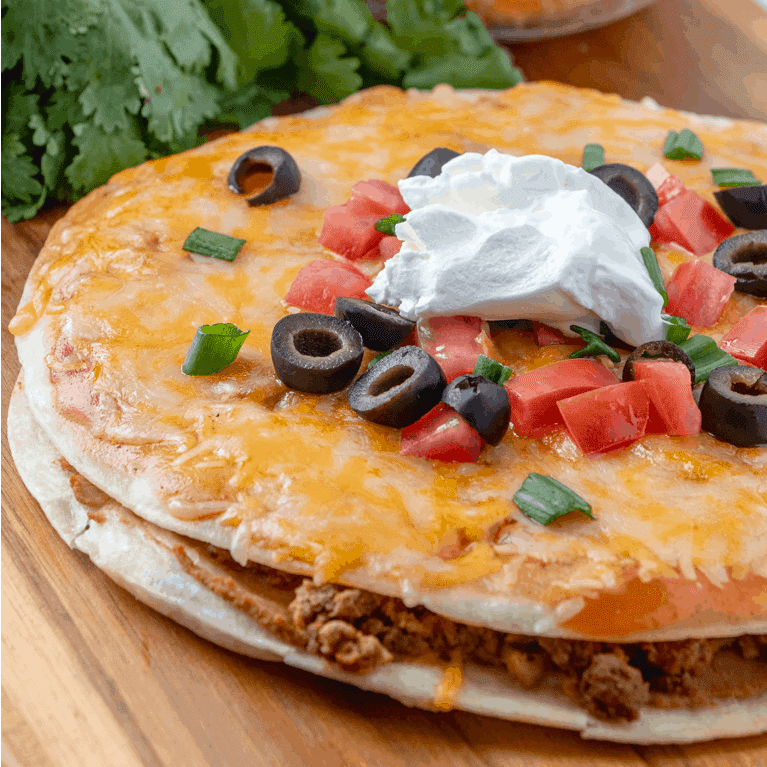

Gluten Free Carnitas Mexican Pizza

Ingredients
- Two gluten free tortillas
- 2 TBSP Sour Cream
- 1 cup shredded cheese
- Verde salsa
- 1/4 lb of carnitas
- Olive oil
Recipe
- Cook the carnitas (leftover carnitas work well)
- Use some olive oil and on a medium low heat in a pan, fry the tortilla on one side.
- Turn the tortilla when golden brown and repeat on the other side
- As he other side of the tortilla is browning, add some cheese and place small pieces of carnitas on the tortilla
- Remove the tortilla and repeat steps 2-4.
- Stack one tortiall on another and add the sour cream and salsa on top of the tortilla and enjoy.